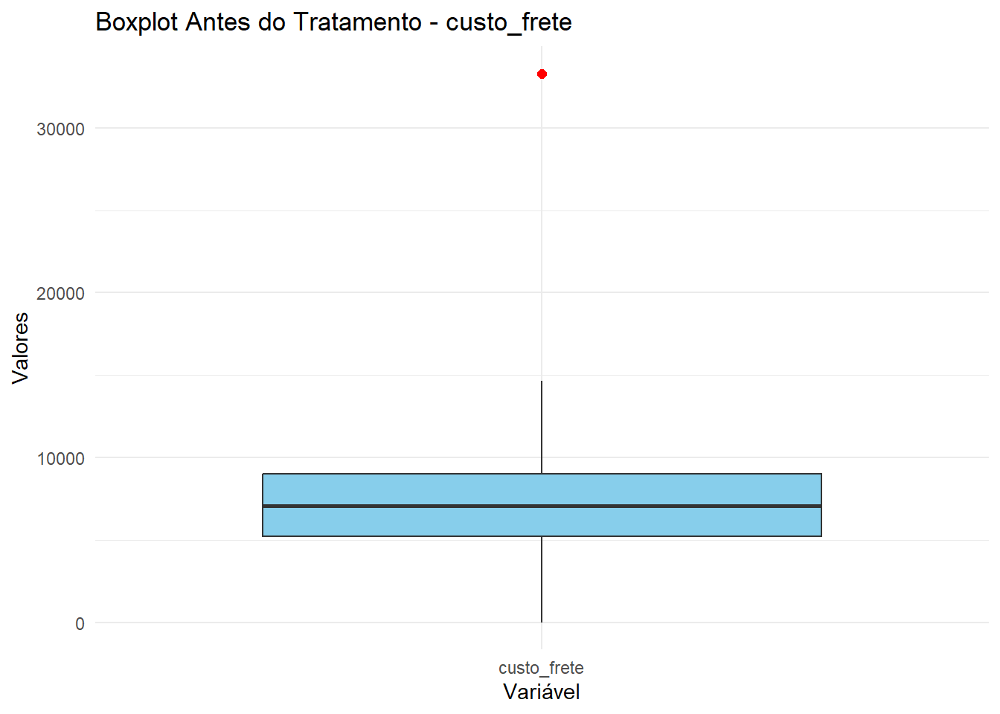
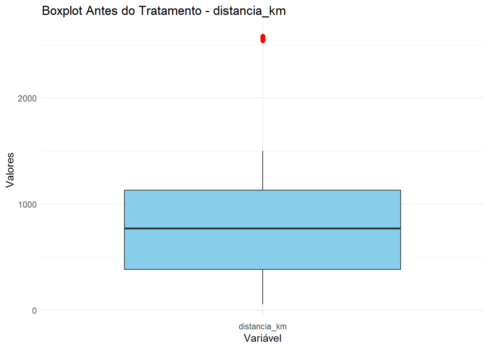
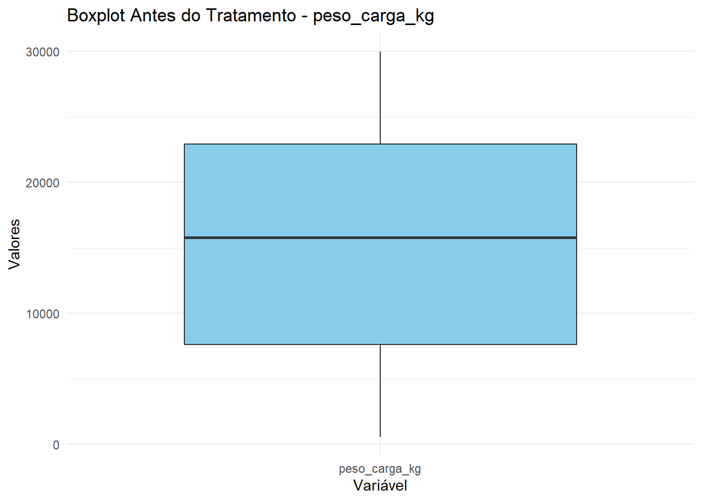
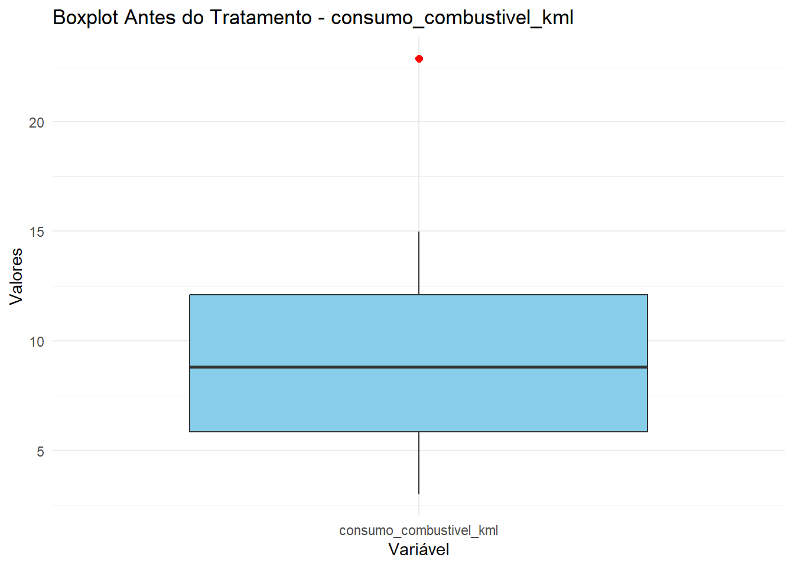
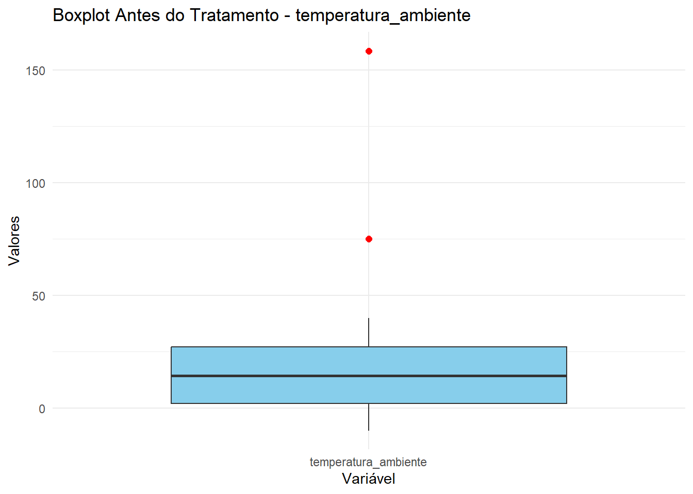
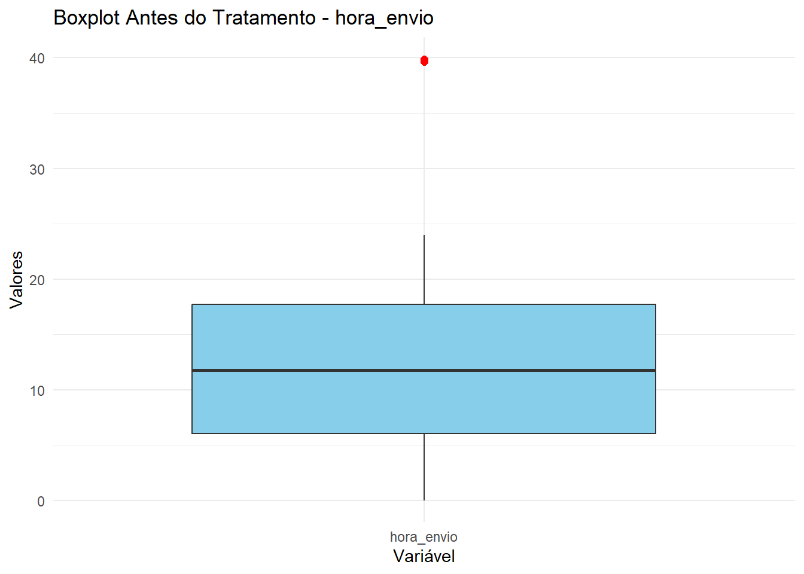
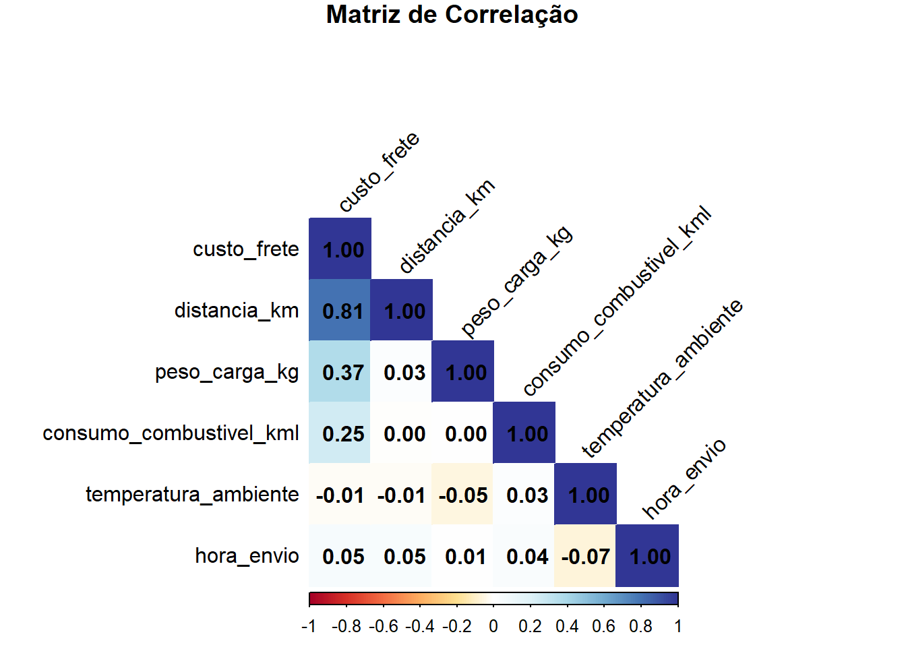
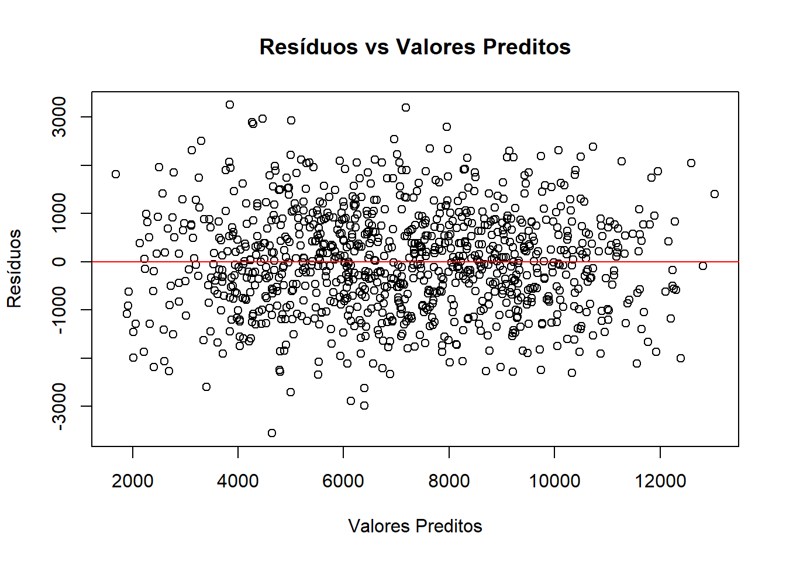
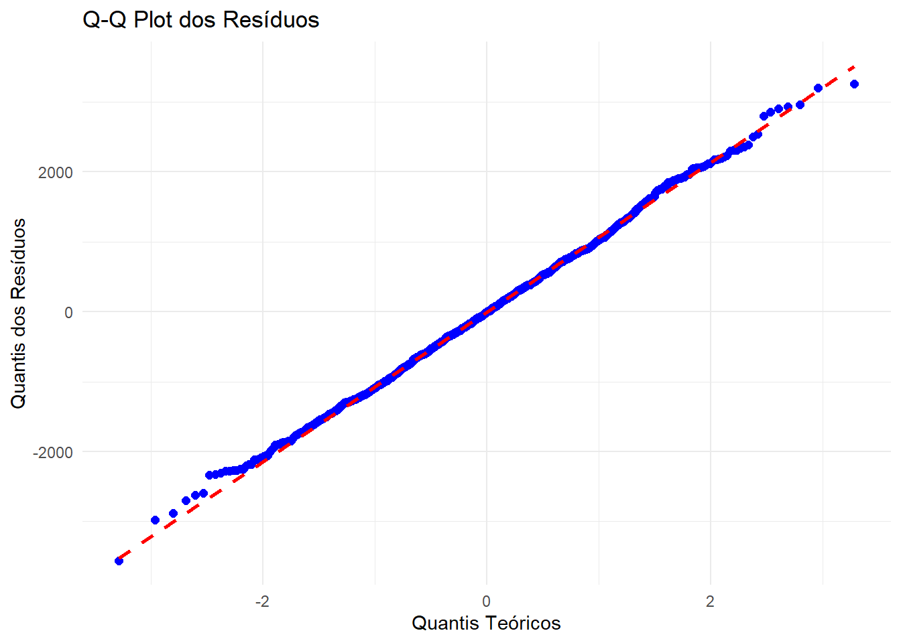

Roteiro para aula pratica - Métodos quantitativos aplicados à administração
Author
Ramon de Araujo Soares
Caso prático - utilização da regressão linear múltipla
Roteiro:
Introdução
Github - ferramenta de armazenamento, versionamento e trabalho em equipe.
Uso de inteligência artificial generativa
Apresentação do caso e descrição dos passos para criação do modelo e análise.
Atividade prática
Etapas (passo-a-passo)
Preparar e tratar os dados
Descrever os dados
Analisar correlação entre as variáveis
Verificar pressupostos da regressão
Calcular amostra
Expressar as hipóteses da regressão
Modelar e analisar regressão
Interpretar e relatar os resultados
Caso
Você é um(a) analista de logística em uma empresa e está preocupado(a) com o aumento dos custos de frete, que têm impactado negativamente os resultados financeiros. Para entender melhor os fatores que influenciam esses custos, você decide usar a ferramenta de regressão múltipla e criar um modelo estatístico capaz de quantificar o impacto de variáveis operacionais como distância percorrida e peso da carga. Após uma exploração inicial dos dados que tinha à disposição, você conseguiu extrair dos sistemas de informação da empresa dois relatórios contendo dados relevantes, que serão utilizados para estruturar sua pesquisa e apoiar decisões estratégicas voltadas à redução de custos e aumento da eficiência logística.
Os arquivos extraídos do sistema foram:
relatorio1.csv
relatorio2.csv
As variáveis a serem utilizadas no estudo estão listadas a seguir.
Variável dependente:
Custo de transporte (custo_frete)
Variáveis independentes:
Distância (distancia_km)
Peso da carga (peso_carga_kg)
Consumo de combustível (consumo_combustivel_kml)
Temperatura do ambiente (temperatura_ambiente)
Horário do envio (hora_envio)
0. Carregar bibliotecas que serão utilizadas
Verifique as bibliotecas necessárias já foram instaladas previamente. Comando library() ou na interface gráfica do RStudio - Packages
Se precisar instalar: Usar install.packages(c(““,”“,”“,”“)) ou, no painel do RStudio, pela aba ‘Packages’
Atenção para os possíveis conflitos que podem acontecer ao carregar mais de uma biblioteca! Isso pode demandar ajustes no uso de alguma função.
library(car)
Carregando pacotes exigidos: carData
library(carData)library(corrplot)
corrplot 0.95 loaded
library(dplyr)
Anexando pacote: 'dplyr'
O seguinte objeto é mascarado por 'package:car':
recode
Os seguintes objetos são mascarados por 'package:stats':
filter, lag
Os seguintes objetos são mascarados por 'package:base':
intersect, setdiff, setequal, union
library(ggplot2)library(lmtest)
Carregando pacotes exigidos: zoo
Anexando pacote: 'zoo'
Os seguintes objetos são mascarados por 'package:base':
as.Date, as.Date.numeric
library(pwr)library(tidyr)
1. Tratar os dados
1.1 Reunir dados dos arquivos em um dataframe
relatorio1 <-read.csv("relatorio1.csv")relatorio2 <-read.csv("relatorio2.csv")dadoscombinados <-merge(relatorio1, relatorio2, by ="id")# Visualizar cabeçalho para conferir se a extração foi correta:head(dadoscombinados)
Identificar quantas entradas têm campos vazios (campos com valor NA)
Retirar entradas com campos vazios
#contar quantas entradas em 'dadoscombinados' tem campos vaziossum(is.na(dadoscombinados))
[1] 10
#criar novo conjunto de dados retirando campos vazios de 'dadoscombinados'dados_trata_NA <- tidyr::drop_na(dadoscombinados)#contar quantas entradas tem campos vazios no novo conjunto de dados criado (verificar se é 0!)sum(is.na(dados_trata_NA))
[1] 0
1.3 Dados inconsistentes e dados extremos
Sumário estatístico prévio para entender os dados e identificar inconsistências
summary(dados_trata_NA)
id custo_frete distancia_km peso_carga_kg
Min. : 1.0 Min. :-20341 Min. : 56.72 Min. : 594.9
1st Qu.: 253.0 1st Qu.: 5237 1st Qu.: 385.06 1st Qu.: 7640.3
Median : 504.0 Median : 7065 Median : 771.01 Median :15812.3
Mean : 502.1 Mean : 7076 Mean : 766.67 Mean :15464.4
3rd Qu.: 751.0 3rd Qu.: 9004 3rd Qu.:1133.83 3rd Qu.:22928.5
Max. :1000.0 Max. : 33291 Max. :2585.47 Max. :29982.7
consumo_combustivel_kml temperatura_ambiente hora_envio
Min. : 3.017 Min. : -9.998 Min. : 0.02264
1st Qu.: 5.872 1st Qu.: 1.953 1st Qu.: 6.06810
Median : 8.823 Median : 14.309 Median :11.80804
Mean : 8.917 Mean : 14.709 Mean :12.03910
3rd Qu.:12.106 3rd Qu.: 27.078 3rd Qu.:17.69835
Max. :22.878 Max. :158.543 Max. :39.88109
Tratar valores negativos no custo_frete
# Contar os valores negativos na variável custo_fretevalores_negativos <-sum(dados_trata_NA$custo_frete <0)cat("Número de valores negativos em custo_frete:", valores_negativos, "\n")
Número de valores negativos em custo_frete: 1
# Excluir os valores negativos do dataframedados_trata_NA_nega <- dados_trata_NA[dados_trata_NA$custo_frete >=0, ]# Confirmar a exclusãocat("Dimensão do dataframe após exclusão:", dim(dados_trata_NA_nega), "\n")
Dimensão do dataframe após exclusão: 988 7
Listar os outliers de cada variável.
Obs1: Considerar outliers valores maiores que 3 desvios padrão.
Obs2: Listar outliers antes e depois do tratamento para conferir se o tratamento foi feito
# Variáveis do dataframevariaveis <-c("custo_frete", "distancia_km", "peso_carga_kg", "consumo_combustivel_kml", "temperatura_ambiente", "hora_envio")# Função para identificar outliers (3 desvios padrão)identificar_outliers <-function(data, variaveis) { outliers_list <-list()# Loop por cada variável especificadafor (coluna in variaveis) { media <-mean(data[[coluna]], na.rm =TRUE) desvio_padrao <-sd(data[[coluna]], na.rm =TRUE)# Identificar os outliers outliers <- data[ data[[coluna]] < (media -3* desvio_padrao) | data[[coluna]] > (media +3* desvio_padrao), coluna, drop =FALSE ]# Armazenar os outliers outliers_list[[coluna]] <- outliers }return(outliers_list)}# Identificar os outliers antes do tratamentooutliers_antes <-identificar_outliers(dados_trata_NA_nega, variaveis)# Remover os outliers do dataframeremover_outliers <-function(data, variaveis) {for (coluna in variaveis) { media <-mean(data[[coluna]], na.rm =TRUE) desvio_padrao <-sd(data[[coluna]], na.rm =TRUE)# Filtrar os valores dentro de 3 desvios padrão data <- data[ data[[coluna]] >= (media -3* desvio_padrao) & data[[coluna]] <= (media +3* desvio_padrao), , drop =FALSE ] }return(data)}# Aplicar o tratamento de outliersdados_trata_final <-remover_outliers(dados_trata_NA_nega, variaveis)# Identificar os outliers depois do tratamento (deve ser vazio)outliers_depois <-identificar_outliers(dados_trata_final, variaveis)# Exibir os outliers antes e depois do tratamentocat("Outliers antes do tratamento:\n")
$custo_frete
[1] custo_frete
<0 linhas> (ou row.names de comprimento 0)
$distancia_km
[1] distancia_km
<0 linhas> (ou row.names de comprimento 0)
$peso_carga_kg
[1] peso_carga_kg
<0 linhas> (ou row.names de comprimento 0)
$consumo_combustivel_kml
[1] consumo_combustivel_kml
<0 linhas> (ou row.names de comprimento 0)
$temperatura_ambiente
[1] temperatura_ambiente
<0 linhas> (ou row.names de comprimento 0)
$hora_envio
[1] hora_envio
<0 linhas> (ou row.names de comprimento 0)
ATIVIDADE:
Refazer o tratamento de dados
ATIVIDADE:
Criar gráfico boxplot para visualizar os outliers de cada variável antes do tratamento obs: vetor dos dados a ser utilizado é ’dados_trata_NA_nega
# Função para criar boxplots no RStudio (dados antes do tratamento)criar_boxplots_antes <-function(data_antes, variaveis) {for (coluna in variaveis) {# Criar dataframe para a variável data_plot <-data.frame(Valor = data_antes[[coluna]],Variavel = coluna )# Gerar o boxplotprint(ggplot(data_plot, aes(x = Variavel, y = Valor)) +geom_boxplot(outlier.color ="red", outlier.size =2, fill ="skyblue") +labs(title =paste("Boxplot Antes do Tratamento -", coluna),x ="Variável",y ="Valores") +theme_minimal() ) }}# Chamar a função para criar e visualizar os boxplotscriar_boxplots_antes(dados_trata_NA_nega, variaveis)






2. Descrição dos dados - Resumo estatístico
summary(dados_trata_final)
id custo_frete distancia_km peso_carga_kg
Min. : 5.0 Min. : 29.71 Min. : 56.72 Min. : 594.9
1st Qu.: 259.2 1st Qu.: 5232.10 1st Qu.: 381.75 1st Qu.: 7621.7
Median : 508.5 Median : 7059.87 Median : 768.23 Median :15788.2
Mean : 505.8 Mean : 7072.09 Mean : 758.89 Mean :15419.2
3rd Qu.: 752.8 3rd Qu.: 9003.88 3rd Qu.:1131.55 3rd Qu.:22868.6
Max. :1000.0 Max. :14637.36 Max. :1499.59 Max. :29982.7
consumo_combustivel_kml temperatura_ambiente hora_envio
Min. : 3.017 Min. :-9.998 Min. : 0.02264
1st Qu.: 5.882 1st Qu.: 1.894 1st Qu.: 6.05883
Median : 8.858 Median :14.192 Median :11.76967
Mean : 8.921 Mean :14.485 Mean :11.97404
3rd Qu.:12.112 3rd Qu.:26.954 3rd Qu.:17.68722
Max. :14.990 Max. :39.887 Max. :23.98441
3. Análise de correlação entre as variáveis
Gerar a matriz de correlação para avaliar as relações entre as variáveis.
# Matriz de correlaçõescorrelacoes <-cor(dados_trata_final[, c("custo_frete", "distancia_km", "peso_carga_kg","consumo_combustivel_kml", "temperatura_ambiente", "hora_envio")])print(correlacoes)
ATIVIDADE:
Usar a biblioteca ‘coorplot’ para exibir de forma gráfica a matriz de correlação Obs: use a função de correlação para os dados tratados finais: cor(dados_trata_final[, c(“var1”, “var2”, “var3” etc)])
Você também pode usar o vetor que eu já criei anteriormente que guardou esses valores de correlação
corrplot(correlacoes, method ="color", type ="lower", tl.col ="black", tl.srt =45, addCoef.col ="black", title ="Matriz de Correlação", mar =c(0, 0, 1, 0), cl.pos ="b", col = corrplot::COL2("RdYlBu"))

4. Verificar pressupostos da regressão - garantir validade do modelo
4.1 Ausência de multicolinearidade (VIF ou matriz de correlação).
Fator de Inflação da Variância (VIF): mede o quanto a variância de um coeficiente de regressão é inflada devido à multicolinearidade
Abaixo de 5: multicolinearidade baixa;
Acima de 5: multicolinearidade relevante. Rever modelo
O relacionamento entre a variável dependente e as variáveis independentes deve ser linear. Desse modo, a mudança na variável dependente será proporcional à mudança de cada variável independente, enquanto as outras forem constantes.
plot(modelo_vif$fitted.values, residuals(modelo_vif), main ="Resíduos vs Valores Preditos", xlab ="Valores Preditos", ylab ="Resíduos")abline(h =0, col ="red")

4.3 Independência dos erros
Os resíduos devem ser independentes entre si; o erro de uma observação não deve estar relacionado ao valor do erro de outra observação.
Verificar a interdependência com o teste Durbin-Watson. Se os resultados forem próximos de 2, podemos considerar ausência de autocorrelação serial
durbinWatsonTest(modelo_vif)
lag Autocorrelation D-W Statistic p-value
1 -0.05474319 2.102387 0.108
Alternative hypothesis: rho != 0
4.4 Homocedasticidade
A variância dos resíduos deve ser constante em todos os níveis de valores previstos. Ou seja, a dispersão dos pontos em torno da linha de regressão deve ser similar a toda a extensão dos dados.
Usando o teste Breusch-Pagan: p-valor deve ser maior do que o nível de significância estabelecido (5%) (aceita H0 do teste)
bptest(modelo_vif)
studentized Breusch-Pagan test
data: modelo_vif
BP = 5.7402, df = 5, p-value = 0.3323
4.5 Verificar a normalidade dos resíduos
Os erros devem seguir uma distribuição normal.
Teste de Shapiro-Wilk: W varia entre 0 e 1. Valor deve ser próximo de 1. p-valor deve ser maior do que o nível de significância estabelecido (5%) (aceita H0 do teste)
shapiro.test(residuals(modelo_vif))
Shapiro-Wilk normality test
data: residuals(modelo_vif)
W = 0.99867, p-value = 0.686
Outra forma interessante de verificar a normalidade dos resíduos é a análise do gráfico Q-Q.
ATIVIDADE:
Desenvolva o gráfico Q-Q para o vetor ‘modelo_vif’
#Gráfico Q-Qresiduos <-residuals(modelo_vif)ggplot(data.frame(residuos), aes(sample = residuos)) +stat_qq(color ="blue", size =2) +# Pontos do gráfico Q-Qstat_qq_line(color ="red", linetype ="dashed", size =1) +# Linha de referêncialabs(title ="Q-Q Plot dos Resíduos", x ="Quantis Teóricos", y ="Quantis dos Resíduos") +theme_minimal()
Warning: Using `size` aesthetic for lines was deprecated in ggplot2 3.4.0.
ℹ Please use `linewidth` instead.

5. Calcular a amostra - verificar se o tamanho da amostra é adequado
Estimar o tamanho mínimo necessário com base nos preditores e no poder estatístico.
N=v+u+1 (Tamanho mínimo da amostra é: graus de liberdade residual + nível de significância + 1)
amostra <-pwr.f2.test(u =5, v =NULL, f2 =0.15, sig.level =0.05, power =0.8)print(amostra)
Multiple regression power calculation
u = 5
v = 85.21369
f2 = 0.15
sig.level = 0.05
power = 0.8
N <-85.21+5+1print(N)
[1] 91.21
6. Hipóteses
O teste de hipótese é importante para o modelo porque, com ele, testamos a significância dos coeficientes de regressão. Avalia se a relação entre as variáveis dependente e independentes tem relação ou se ocorrem por acaso.
Hipótese Nula (H0): Não há relação significativa entre as variáveis independentes (distância, peso da carga, etc.) e o custo do frete.
Hipótese Alternativa (H1): Ao menos uma variável tem relação significativa com o custo do frete.
7. Modelar e analisar a regressão
# Ajustar o modelo de regressãomodelo <-lm(custo_frete ~ distancia_km + peso_carga_kg + consumo_combustivel_kml + temperatura_ambiente + hora_envio, data = dados_trata_final)# Resumo do modelosummary(modelo)
Call:
lm(formula = custo_frete ~ distancia_km + peso_carga_kg + consumo_combustivel_kml +
temperatura_ambiente + hora_envio, data = dados_trata_final)
Residuals:
Min 1Q Median 3Q Max
-3555.7 -727.2 -10.6 715.7 3252.0
Coefficients:
Estimate Std. Error t value Pr(>|t|)
(Intercept) -46.670960 141.930627 -0.329 0.742
distancia_km 4.917884 0.079846 61.592 <2e-16 ***
peso_carga_kg 0.106283 0.003938 26.987 <2e-16 ***
consumo_combustivel_kml 192.452474 9.756069 19.726 <2e-16 ***
temperatura_ambiente 1.625960 2.361985 0.688 0.491
hora_envio 0.612211 4.928995 0.124 0.901
---
Signif. codes: 0 '***' 0.001 '**' 0.01 '*' 0.05 '.' 0.1 ' ' 1
Residual standard error: 1059 on 972 degrees of freedom
Multiple R-squared: 0.8375, Adjusted R-squared: 0.8367
F-statistic: 1002 on 5 and 972 DF, p-value: < 2.2e-16
temperatura_ambiente e hora_envio não são estatisticamente significativos, pois p>0.05; ou seja, tem impacto irrelevante no modelo.
Resíduos: Mediana próxima de zero. Erros não possuem um viés sistemático significativo. O erro padrão dos resíduos mostrou que, em média, houve uma diferença de R$1.059,00 entre o valor predito e o valor real no custo do frete.
A estatística F (razão entre a variabilidade explicada pelo modelo e a variabilidade residual) apresentou um valor alto, 1002, o que demonstra que o modelo tem boa predição da variabilidade dos resultados. O p-valor da estatística F próximo de 0 mostra que ao menos uma das variáveis independentes tem impacto significativo no custo do frete.
R2 0.8375 e R2 ajustado de 0.8367, demonstrando que o modelo é consistente e tem um alto valor explicativo, apesar da pequena penalização pela inclusão de variáveis irrelevantes.
A análise da variância do modelo reforça a ideia de que as variáveis Distância, Peso da carga e Consumo de combustível contribuem bastante para o modelo e que as variáveis Temperatura do ambiente e Hora do envio não são significativas.
ATIVIDADE
Ajustar o modelo para que tenha apenas as variáveis relevantes e comparar o resultado